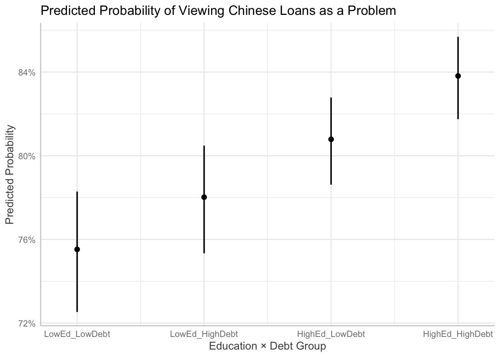

COUNTRY Completion Year
<char> <num>
1: Africa, regional NA
2: Africa, regional NA
3: Africa, regional 2021
4: Algeria 2021
5: Algeria NA
6: Algeria 2021
Title
<char>
1: ICBC contributes to $1.2 billion syndicated loan to Afreximbank for on-lending purposes in December 2021
2: Chinese Government signs agreement with UN World Food Program to provide food aid to Benin, Liberia and the Republic of Congo in July 2021
3: Chinese Mission to the African Union donates medical supplies to the United Nations Economic Commission for Africa in March 2021
4: Chinese Government donates 200,000 Sinopharm vaccines worth $3.6 million in February 2021 (Linked to Project ID#97169)
5: Hubei Health Comission sends 26th medical team to Algeria
6: Chinese Government donates 3.2 million Sinovac Covid-19 vaccine doses worth $57.6 million in September 2021 (Linked to Project ID#94808)
Description
<char>
1: On December 21, 2021, the African Export-Import Bank (Afreximbank) signed a $1.2 billion syndicated term loan facility agreement with a group of 22 banks, including the Industrial and Commercial Bank of China (ICBC). The loan carried a 3-year maturity and unknown interest rate. First Abu Dhabi Bank PJSC, Rand Merchant Bank, a division of FirstRand Bank Limited (London Branch) and Standard Chartered Bank acted as joint Global Coordinators, Mandated Lead Arrangers and Bookrunners on the Facility. Standard Chartered Bank acted as Documentation Agent and is the Facility Agent for the transaction.
2: On July 29, 2021, the Chinese Government signed an agreement with the United Nations World Food Programme (WFP) to provide food aid to Benin, Liberia, and the Republic of Congo. The purpose of this agreement is to provide food assistance to vulnerable groups in the three countries. The agreement indicates that China will use its South-South Cooperation Fund to finance the project and the WFP will help to implement the project. Implementation details have yet to be found. A signing ceremony was held virtually for this agreement. Luo Zhaohui, the Chairman of the China International Development Cooperation Agency (CIDCA), and David Beasley, the Executive Director of the World Food Programme (WFP), attended the ceremony and signed the food assistance agreement.
3: On March 24, 2021, the Chinese Mission to the African Union (AU) donated medical supplies for the prevention and treatment of Covid-19 to the United Nations Economic Commission for Africa (UNECA). The donation included thermometers, oxygen generators, isolation gowns, ventilators, surgical masks and other personal protective equipments (PPE). The UNECA is located in Addis Ababa, Ethiopia.
4: On February 10, 2021, Chinese Foreign Minister Wang Yi confirmed a donation of 200,000 Sinopharm vaccine doses (worth an estimated $3.6 million) on a phone call with Algerian Foreign Minister Boukadoum. The vaccines arrived on February 24, 2021 and were handed over in a ceremony at Algeria's Boufarik military airport (as captured via Project ID#94808). Then, in September 2021, the Chinese Government donated 3.2 million doses of the Sinovac Covid-19 vaccine worth an estimated $57.6 million (as captured via Project ID#97169).
5: In August and Septermber 2021 the 26th medical team sent by the Hubei Health Comission arrived in Algeria. The team had 81 total members split across 8 smaller teams. By June 2022, the medical team had received 72,000 patients, admitted 45,000 hospitalizations, performed 17,000 operations of various types, and delivered 25,000 births. The team also provided medical services to overseas Chinese and employees of Chinese-funded companies.
6: On February 10, 2021, Chinese Foreign Minister Wang Yi confirmed a donation of 200,000 Sinopharm vaccine doses (worth an estimated $3.6 million) on a phone call with Algerian Foreign Minister Boukadoum. The vaccines arrived on February 24, 2021 and were handed over in a ceremony at Algeria's Boufarik military airport (as captured via Project ID#94808). Then, in September 2021, the Chinese Government donated 3.2 million doses of the Sinovac Covid-19 vaccine worth an estimated $57.6 million (as captured via Project ID#97169).
Status Region Amount
<char> <char> <num>
1: Pipeline: Commitment Africa 54545454
2: Pipeline: Commitment Africa NA
3: Completion Africa NA
4: Completion Africa 3600000
5: Implementation Africa NA
6: Completion Africa 57600000Final Project
Final Project
Introduction:
Over the past century, China has become an increasingly important player in the politics and economic development of African countries. The Sino-African relationship, which began in the 1950s through political diplomatic relations rooted in third world solidarity has expanded into a multifaceted economic partnership. This newfound association poses tremendous implications for the US in its role in global governance and affairs on the continent, prompting a great deal of discourse in international relations. Two dominant schools of thought emerge as the framework through which this engagement is interpreted—those who view Chinese investment as a neo-colonial form of extractivism and those who see it as a mutually beneficial South-South partnership offering an alternative to Western conditional aid. As China and the US continue to compete for economic and geopolitical influence, African nations find themselves positioned in the center of the global tug of war, leveraging partnerships for developmental gain and wrestling with concerns of debt sustainability, democracy, and resource control. Prevailing narratives from the West would have it that Chinese investments are deleterious to democratic norms and governance structures in Africa, often portraying them as enabling authoritarian regimes, exacerbating corruption, and undermining transparency. The broader complexity of this debate is reflected in the differing stances of African politicians, with some embracing Chinese investment as a necessary catalyst for development, while others express concerns over debt dependency and governance implications. However, one crucial perspective that remains underexplored in the literature is that of African people themselves. This project investigates how African citizens perceive Chinese loans, asking: How do these perceptions vary based on the amount of Chinese investment their countries receive? It further examines whether these perceptions differ by educational attainment, positing that citizens with greater access to information may evaluate foreign influence more critically. By accounting for both national-level exposure and individual-level variation, the analysis seeks to illuminate how structural and informational factors interact to shape public sentiment in the context of global power competition.This paper aims to fill the void of African perspectives in the ongoing debate about the consequence of increased Chinese partnership on the continent. Moving beyond state-centric and Western-dominated narratives, this analysis seeks to highlight how Africans themselves interpret, navigate, and respond to Chinese engagement—whether as an opportunity for economic transformation, a source of new dependencies, or something more nuanced. Much of the scrutiny surrounding China’s role in Africa stems from its ideological divergence from the United States. Early partnerships, formed during the Cold War, were grounded in shared anti-imperialist sentiment and a rejection of Western dominance, establishing relationships that prioritized sovereignty over liberal democratic values. This ideological contrast remains relevant today, as China’s policy of non-interference and emphasis on state-led development continues to clash with the U.S.’s democracy-promotion agenda (@saiia2025). These divergent worldviews are reflected in their approaches to economic engagement: China primarily offers loans and sometimes infrastructure-for-resource deals, while the U.S. tends to favor grant-based aid linked to governance and democratic reforms. While dominant Western narratives often portray Chinese loans as uniformly burdensome or exploitative, scholars argue that the reality is more nuanced. Although risks are present, Chinese lending practices vary significantly depending on the lender, the borrowing country, and the nature of the project (@alden2021). While Chinese creditors are a notable part of Africa’s debt landscape, their overall contribution is relatively modest and not the primary cause of debt distress on the continent (@alden2021). Beyond economics, China’s expanding presence is increasingly viewed as a challenge to U.S. soft power, with scholars and policymakers warning of a potential resurgence in authoritarian influence as China deepens its foothold across the continent. Geopolitical competition has real consequences, beyond economic benefits it redefines how individuals perceive development projects and foreign direct investment. This competition shapes not only policy decisions at the national level but also public opinion, influencing how communities evaluate the legitimacy, intentions, and long-term value of foreign involvement in their local development (@springman2025). The dominant narrative surrounding partnerships in Africa often frames them as a zero-sum contest between global powers—primarily the United States and China. Such portrayals are overly reductive and leave little room for nuance in understanding African agency. Taking African perspectives seriously requires moving beyond this binary thinking. The continent’s engagement with, and attraction to, China’s development model should not be interpreted as a rejection of democratic or competitive norms. Rather, these choices are often shaped less by ideology and more by pragmatic assessments of what is perceived to be most beneficial (@Benabdallah2023). Any research occurring about the African continent cannot ignore its historical position at the center of global struggles from colonialism to the Cold War and now the current era of multipolarity. This long standing engagement with competing global powers has not only shaped the political and economic structures of African states, but also informs how contemporary partnerships are evaluated and pursued. Understanding these dynamics requires a shift away from viewing African states as passive recipients of influence, and instead recognizing their strategic agency in navigating an evolving global order. Building on work done in analyzing the role of China’s economic influence in the competitive global landscape– and seeking to complicate our understanding of Chinese African relations beyond western dominated narratives– this study centers how Africans perceive China’s growing presence on the continent. It challenges the assumption that growing geopolitical competition fundamentally reshapes African nations’ preferences for aid from either China or the West. Instead, it posits that–at least in the eyes of citizens– geopolitical competition has neutral effects on the ways in which they view aid—especially given that these external pressures have long since informed the African nations engagement with global powers.
Theory and Hypothesis:
This paper examines how varying levels of Chinese foreign investment, within the context of an increasingly competitive global landscape, influence African citizens’ perceptions of foreign aid and development. Grounded in scholarship that complicates binary portrayals of Chinese-African engagement (@Benabdallah2023;@taylor2006), this study considers that geopolitical competition is not necessarily internalized by everyday citizens. This is not because it lacks significance, but because external power struggles have historically shaped Africa’s interactions with the world. In this context, the longstanding presence of competing global powers has normalized foreign involvement, prompting citizens to evaluate aid less through ideological lenses and more through its tangible outcomes. As a result, this paper argues that perceptions of Chinese aid are shaped more by visible, material benefits than by broader geopolitical narratives. This responsiveness may be especially pronounced among individuals with lower levels of formal education, who are often more directly impacted by and attuned to localized development outcomes than abstract foreign policy dynamics. Hypothesis: In countries receiving higher levels of Chinese development finance, citizens will exhibit more favorable perceptions of Chinese foreign investment. This relationship will be stronger among individuals with lower levels of formal education. This hypothesis rests on the assumption that development in the country is what enhances the legitimacy of foreign actors, independent of concerns about national debt or sovereignty. This effect may be magnified for populations that are less exposed to critical ideological narratives. It’s clear that Chinese lending has been crucial to financing large scale projects. Therefore, it is plausible that in countries receiving higher levels of Chinese finance, citizens perceive this engagement more positively not necessarily because they prefer China ideologically, but because they see real material outcomes in their daily lives. Research Design This study uses two primary datasets: AidData’s Global Chinese Development Finance Dataset v3.0 and the Afrobarometer Merged Round 8 survey (2022), covering 34 African countries. AidData tracks 20,985 Chinese-financed development projects worth $1.34 trillion across 165 low- and middle-income countries from 2000 to 2021, with implementation data through 2023. It provides country-level indicators of Chinese investment. Afrobarometer offers nationally representative surveys of adults aged 18 and older, capturing political, economic, and social attitudes. The unit of analysis is the individual respondent (n = 15,747), with country-level investment data merged by country of residence. While the merged dataset enables a multi-level analysis of how national investment exposure interacts with individual-level characteristics, there are important limitations. Notably, neither dataset directly captures how African citizens feel about receiving Chinese investment. Instead, this study relies on a proxy variable that reflects whether respondents believe their government has borrowed too much from China—a question that signals concern but does not fully capture perceptions of the investment’s quality, intent, or impact. As such, any conclusions drawn must be interpreted with caution, given the indirect nature of the measure. The analysis is carried out using a logistic regression to model the probability of the binary outcome (yes or no). The independent variable x represents the amount of Chinese investment per country and is drawn from AidData’s Global Chinese Development Finance dataset. The dependent variable Y represents the public perception of Chinese foreign investment as either positive or negative. Question 65C from Afrobarometer round 8– “Do you think our government has borrowed too much money from China, or haven’t you heard enough to say?”— is used as a proxy for public awareness and attitudes toward Chinese development finance. This variable captures whether respondents believe their government has borrowed excessively from China, with value labels indicating ‘Yes’ (1), ‘No’ (0), ‘Not applicable’ (7), ‘Refused’ (8), ‘Don’t know’ (9), and ‘Missing’ (-1). For the purposes of this analysis, only valid responses coded as ‘Yes’ or ‘No’ are retained to construct a binary outcome. By pairing Afrobarometer perception data with verified investment records, this study provides the opportunity to assess whether public concerns about Chinese lending correlate with financial engagement on the ground.
Logistic Regression Model: Logit(P(Yi=1))=β0+β1Xi+β2Z1+β3Z2+⋯+βkZk+ϵi
The model includes several covariates to account for factors that may shape perceptions of Chinese development finance. Education captures access to political knowledge; employment status reflects socio economic positioning and potential exposure to aid benefits; trust in government gauges institutional confidence, which may influence attitudes toward foreign borrowing. These variables are measured using Afrobarometer survey items detailed in the appendix. A key limitation of this study is the potential for omitted variable bias. This arises when relevant factors that influence both the independent and dependent variables are not included in the model. Unobserved factors on the individual level, such as political ideology or exposure to foreign media, are not directly captured in the available data and mahy still influence response. While the empirical strategy accounts for this on a country to country basis, it does noy limit the risk of omitted variable bias entirely. There is also a temporal limitation, as public opinion is captured at only one point in time. This cross-sectional snapshot prevents the analysis from observing how perceptions of Chinese investment evolve in response to shifting political dynamics, project outcomes, or broader changes in the geopolitical landscape. Without longitudinal data, it is difficult to assess whether observed attitudes are stable over time or reflect short-term sentiments influenced by recent events. To strengthen causal inference, this study includes an empirical extension that restricts the sample to individuals with low formal education. By doing so, the analysis isolates variation in perception among respondents who are less likely to be exposed to elite or ideological criticism of Chinese investment. If the relationship between country-level aid and perception holds in this subgroup, it reduces concern that the main results are driven by educated elites who may be more attuned to geopolitical discourse or external media. This extension helps rule out information exposure as a confounding pathway, strengthening the claim that observed effects reflect material development impacts rather than ideological filtering. To strengthen causal inference, this study includes an empirical extension that restricts the sample to individuals with low formal education. By doing so, the analysis isolates variation in perception among respondents who are less likely to be exposed to elite or ideological criticism of Chinese investment. If the relationship between country-level aid and perception holds in this subgroup, it reduces concern that the main results are driven by educated elites who may be more attuned to geopolitical discourse or external media. This extension helps rule out information exposure as a confounding pathway, strengthening the claim that observed effects reflect material development impacts rather than ideological filtering.

| Without Region Fixed Effects | With Region Fixed Effects | |
|---|---|---|
| + p < 0.1, * p < 0.05, ** p < 0.01, *** p < 0.001 | ||
| Education: Medium | 0.281*** | 0.090 |
| (0.046) | (0.056) | |
| Education: High | 0.259*** | 0.175* |
| (0.056) | (0.069) | |
| Employment: Looking | -0.348*** | -0.080 |
| (0.056) | (0.065) | |
| Employment: Part-time | -0.155* | 0.030 |
| (0.068) | (0.078) | |
| Trust in President: Medium | -0.054 | -0.088 |
| (0.050) | (0.058) | |
| Trust in President: High | -0.478*** | -0.427*** |
| (0.044) | (0.054) | |
| Num.Obs. | 15497 | 15497 |
| AIC | 16693.5 | 14819.2 |
| BIC | 16754.7 | 17939.8 |
| Log.Lik. | -8338.750 | -7001.618 |
| F | 43.709 | 4.963 |
| RMSE | 0.42 | 0.38 |
# Create a summary data frame
summary_stats <- tibble::tibble(
Variable = c("Total Aid", "Education", "Trust in President", "Employment Status"),
Mean = c(mean(analysis_data$total_aid, na.rm = TRUE),
mean(as.numeric(analysis_data$Q97), na.rm = TRUE),
mean(as.numeric(analysis_data$Q41A), na.rm = TRUE),
mean(as.numeric(analysis_data$Q95A), na.rm = TRUE)),
Range = c(
paste0("$", scales::comma(min(analysis_data$total_aid, na.rm = TRUE)), " - $", scales::comma(max(analysis_data$total_aid, na.rm = TRUE))),
paste0(range(analysis_data$Q97, na.rm = TRUE), collapse = " - "),
paste0(range(analysis_data$Q41A, na.rm = TRUE), collapse = " - "),
paste0(range(analysis_data$Q95A, na.rm = TRUE), collapse = " - ")
),
`Standard Deviation` = c(sd(analysis_data$total_aid, na.rm = TRUE),
sd(as.numeric(analysis_data$Q97), na.rm = TRUE),
sd(as.numeric(analysis_data$Q41A), na.rm = TRUE),
sd(as.numeric(analysis_data$Q95A), na.rm = TRUE))
)
gt(summary_stats) |>
tab_header(title = "Descriptive Statistics of Key Variables")| Descriptive Statistics of Key Variables | |||
|---|---|---|---|
| Variable | Mean | Range | Standard Deviation |
| Total Aid | 2.063356e+10 | $368,636,433 - $108,911,480,026 | 3.022806e+10 |
| Education | 4.290087e+00 | -1 - 99 | 4.404936e+00 |
| Trust in President | 1.589128e+00 | -1 - 9 | 1.347424e+00 |
| Employment Status | 1.316378e+00 | -1 - 9 | 1.230043e+00 |
Findings
Figure 1 displays a bar chart visualizing the relationship between the average Chinese investment and public perception of Chinese debt. The plot shows that, on average, those who perceive excessive borrowing report slightly lower investment from China compared to those who do not view the borrowing as excessive. The “Yes” group has an average investment of around 15 billion USD, while the “No” group has an average investment of approximately 17 billion USD. Although there is a discernible difference, the error bars suggest that there is considerable variability within each group, implying that while a trend exists, it may not be overwhelmingly large. The relationship between public perception of Chinese debt and investment appears to be modest, highlighting the need for further exploration of additional factors that could influence public views on this matter. The regression analysis (Table 1) examines predictors of public opinion on Chinese debt, focusing on education, employment status, and trust in the president. Education level significantly affects perceptions, with those having medium or high education more likely to perceive excessive borrowing. Specifically, individuals with medium education are 0.281 more likely, while those with higher education are 0.259 more likely to hold this view. These results indicate that education is an important factor in shaping opinions about government borrowing from China. Employment status also plays a role, with job-seeking individuals (-0.348) less likely to view borrowing as excessive, suggesting that economic circumstances may influence perceptions. Those in part-time employment show a weaker negative effect (-0.155), reflecting the idea that individuals focused on immediate economic concerns may not prioritize foreign debt issues. Trust in the president is another key factor, with higher trust leading to less critical views on Chinese debt. High trust in the president correlates with a -0.478 reduction in the likelihood of perceiving excessive borrowing. The regression results are statistically significant, with education and trust in the president showing strong effects at the 1% level, while employment status is significant at the 5% level. The findings underscore the importance of education and trust in shaping public perceptions of Chinese debt, with substantial effects from these variables. Despite the strong effects, the large sample size (15,497) suggests sufficient statistical power, though unobserved factors could still influence perceptions.
| (1) | |
|---|---|
| + p < 0.1, * p < 0.05, ** p < 0.01, *** p < 0.001 | |
| LowEd × HighDebt | 0.140+ |
| (0.072) | |
| HighEd × LowDebt | 0.309*** |
| (0.079) | |
| HighEd × HighDebt | 0.518*** |
| (0.082) | |
| Employment: Looking | -0.314*** |
| (0.080) | |
| Employment: Part-time | -0.126 |
| (0.096) | |
| Num.Obs. | 7557 |
| AIC | 8410.1 |
| BIC | 8458.6 |
| Log.Lik. | -4198.062 |
| F | 20.814 |
| RMSE | 0.43 |

Empirical Extension:
Figure 2 displays the predicted probabilities of viewing Chinese loans as a problem across four education × debt group interactions: LowEd_LowDebt, LowEd_HighDebt, HighEd_LowDebt, and HighEd_HighDebt. The results demonstrate that individuals in the HighEd_HighDebt group (those with high education and a high perception of debt) have the highest predicted probability of viewing Chinese loans as a problem, approaching 84%. This is followed by the HighEd_LowDebt group, with a predicted probability of around 80%. The LowEd_LowDebt group (those with low education and a low perception of debt) has the lowest predicted probability, just below 76%, while the LowEd_HighDebt group lies between 76% and 80%. These findings suggest that education, especially when combined with perceptions of national debt, significantly influences how individuals view Chinese loans. The error bars in the plot indicate that the differences between these groups are statistically significant. For example, the HighEd_HighDebt group is predicted to have a significantly higher probability of viewing Chinese loans as problematic compared to the LowEd_LowDebt group, reinforcing the hypothesis that education and debt perception interact to shape opinions on foreign loans. This result supports the notion that access to information, represented here by education, conditions how individuals respond to foreign debt, with better-informed groups (those with higher education) showing more concern about the implications of such loans. The regression model further supports these findings, with education and debt level interacting as key determinants of individuals’ views on Chinese loans. Specifically, the predicted probabilities reveal an approximately 8% difference between the LowEd_LowDebt and HighEd_HighDebt groups, demonstrating that education significantly influences the likelihood of perceiving Chinese loans as problematic. The regression results (table 2) also show that employment status plays a role, with individuals “Looking” for work showing a statistically significant negative association with viewing Chinese loans as a problem (-0.314, ***p < 0.001). It’s likely that individuals who are unemployed or seeking work may be less concerned about foreign debt, possibly because their immediate economic concerns take precedence. The part-time and full-time employment coefficients were not statistically significant, indicating that this measurement of employment may not have a large impact on perceptions of Chinese loans. Overall, the plot and regression analysis highlights that education plays a significant role in shaping public opinion on foreign debt. The results show that higher education, particularly in combination with the perception of high national debt, leads to a higher probability of viewing Chinese loans as a problem. These findings confirm the hypothesis that access to information—through education—significantly conditions individuals’ responses to Chinese loans.
Conclusion:
For Africans surveyed in the Afrobarometer 2022 Round 8 Survey we find some evidence that education, particularly in combination with perceptions of national debt, plays a significant role in shaping individuals’ views on Chinese loans. The analysis shows that individuals with higher education and a high perception of debt are more likely to view Chinese loans as problematic. This relationship is evident both in the regression model and the predicted probabilities, with a clear pattern emerging. Employment status also plays a role, with individuals seeking work being less likely to view these loans negatively, possibly due to more immediate economic concerns. The study highlights the potential for African countries to strategically leverage education, transparency, and information access to navigate complex international relationships. By prioritizing these factors, African governments can better manage foreign partnerships and secure more balanced and equitable agreements that safeguard the welfare of future generations. This analysis focuses on education and debt perception, but other factors—such as political ideology or media exposure—heavily influence opinions. Future research would benefit from incorporating these variables and expanding the scope to include longitudinal data, providing stronger evidence on how education and information affect public opinion over time. While the insight that education and information access shape public opinion is not groundbreaking, the unique contribution of this study lies in its specific focus on how education and debt perception, in particular, interact to influence views on Chinese loans in Africa. Instead of merely recognizing that more information leads to better-informed opinions, this study emphasizes how individuals’ educational background and perceptions of national debt work together to shape their opinions on Chinese loans. This nuance gives a more comprehensive understanding of how African citizens evaluate Chinese loans in a complex geopolitical context.
#Appendix
This appendeix contains the questions used for covariates in the study: Education level, Employment, Region, Trust in President.
Question Number: Q97 Question: What is your highest level of education? Variable Label: Q97. Education of respondent Values: 0-9, 98, 99, -1 Value Labels: 0=No formal schooling, 1=Informal schooling only (including Koranic schooling), 2=Some primary schooling, 3=Primary school completed, 4=Intermediate school or some secondary school/high school, 5=Secondary school/high school completed, 6=Post-secondary qualifications, other than university, 7=Some university, 8=University completed, 9=Post-graduate, 98=Refused, 99=Don’t know, -1=Missing Source: SAB
Question Number: Q95A Question: Do you have a job that pays a cash income? [If yes, ask] Is it full-time or part-time? [If no, ask:] Are you presently looking for a job? Variable Label: Q95a. Employment status Values: 0-3, 8, 9, -1 Value Labels: 0=No, not looking, 1=No, looking, 2=Yes, part time, 3=Yes, full time, 8=Refused, 9=Don’t know, -1=Missing Source: Afrobarometer Round 5
Question Number: Q95C Question: What is your main occupation? [If unemployed, retired, or disabled, ask:] What was your last main occupation? Variable Label: Q95c. Occupation of respondent Values: 0-12, 220, 700, 1500, 15800, 1700, 95, 98, 99, -1 Value Labels: 0=Never had a job, 1=Student, 2=Housewife/homemaker, 3=Agriculture/farming/fishing/ forestry, 4=Trader/hawker/vendor, 5=Retail/shop, 6=Unskilled manual worker, 7=Artisan or skilled manual worker, 8=Clerical or secretarial, 9=Supervisor/foreman/senior manager, 10=Security services, 11=Mid-level professional, 12=Upper-level professional, 220=Retired, 700=Self-employed/Business Owner, 1500=Retired, 1580=Retired, 1700=RETRAITÉ, 95=Other, 98=Refused, 99=Don’t know, -1=Missing Source: SAB
Question Number: REGION Question: Region/Province Variable Label: Province or region Values: 100-111, 140-164, 180-192, 220-224, 260-275, 300-346, 350-359, 380-394, 460-462, 501-509, 540-550, 580-593, 620-673, 700-708, 740-770, 780-792, 820-829, 860-869, 900-909, 930-933, 1100-1107, 1140-1145, 1221- 1232, 1260-1292, 1300-1307, 1340-1350, 1500-1511, 1540-1545, 1580-1586, 1620-1623, 1700-1708, 1740-1747, 1780-1797
Question Number: Q41A Question: How much do you trust each of the following, or haven’t you heard enough about them to say: The President? Variable Label: Q41a. Trust president Values: 0-3, 8, 9, -1 Value Labels: 0=Not at all, 1=Just a little, 2=Somewhat, 3=A lot, 8=Refused, 9=Don’t know/Haven’t heard, - 1=Missing Source: Zambia96
“Does a respondent’s opinion on Chinese debt predict how much aid their area received, controlling for other factors like education, employment, and trust in the president?”